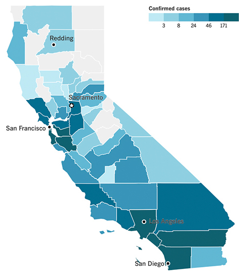
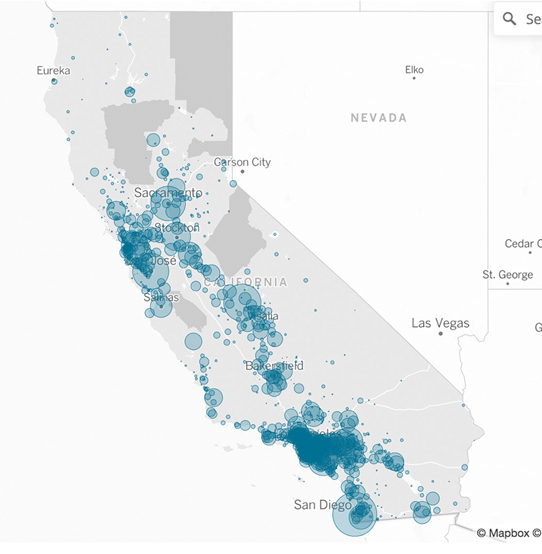
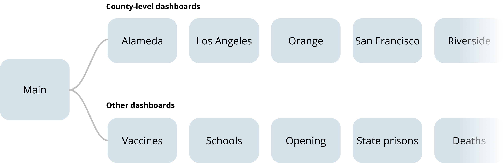
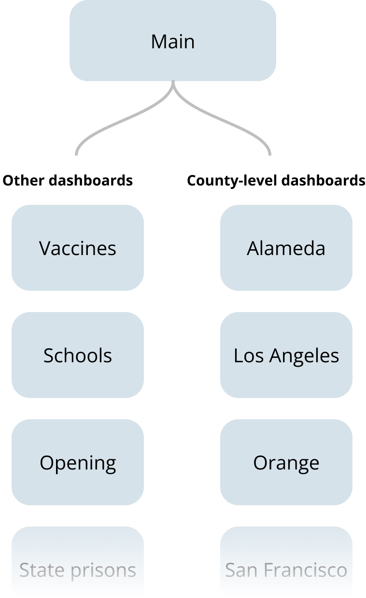
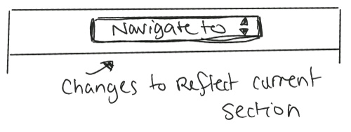
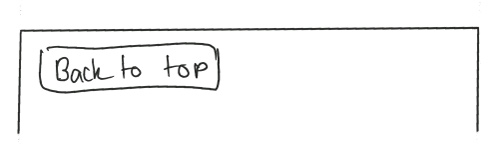
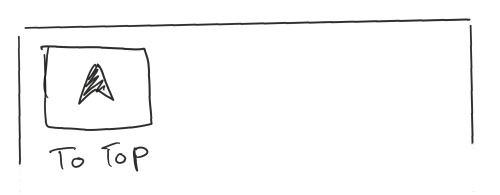
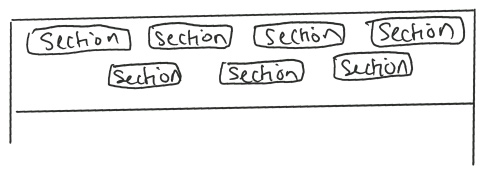
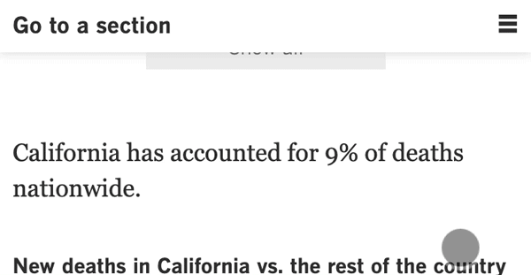
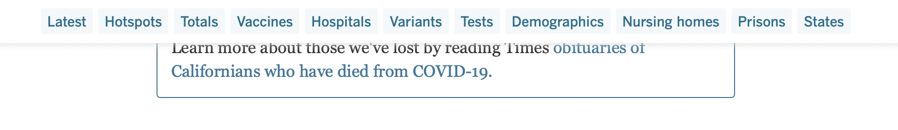

Bottom of page
- Prevented users from having to scroll back up.
- Was a better place to list out all dashboards


At the start of the pandemic, the Los Angeles Times needed a central location to host and distribute all data we acquired about the state of the virus in California.
The dashboards, visuals, etc. had to be easy for regular users to understand. We sorted through large sets of data designed pages to easily showcase it to our readers.
Created a single high level dashboard and detailed dashboards for specific user needs.

We filtered information given to is by the California Department of Public Health. (Swetha Kannan / Los Angeles Times)
We had to get the initial page up within 3 days of starting our work on the tracker. California had started whispers of possibly going into lockdown and as it became a very real possibility, we rushed to mockup the dashboard in Adobe XD, analyze how competitors like the New York Times are visualizing similar data, talk to the California Department of Public Health to gather data, and publish the dashboard.
To provide California residents with an informative, convenient, and honest look at the State’s coronavirus data for the duration of the pandemic.
After we published in March 2020, we contributed various improvements and expansions for the duration of the pandemic.
We needed to boil down loads of data coming in daily from 53 agencies.
The page had to perform well on all platforms, since over 40% of the Times' audience used mobile devices to access the site.
The tone of the page had to be serious but not alarming. Stoic but not robotic.
Some people cared about where the Virus was spreading. Others only cared about where vaccines were available. The dashboard had to provide avenues for everyone to get what they want.
Because the project turned into a series of dashboards, it had to link to each other in clear ways. Some dashboards were extremely long pages and users had to have an easy way of going through them
53 agencies across California release data daily about the state of the coronavirus. There was a gap between the information that these county-level agencies put out and information from the state. We made the decision to start using county data for more accurate and granular information.
I experimented with different ways we could show the spread of the virus across California through maps.
The chloropleth map gave a good estimate of where cases are. However, it provided a skewed understanding.
A bubble map did a much better job of showing areas where the virus was concentrated and was more useful to people looking to see where they can travel.
Due to user demand, line charts were added that showed the total amount of cases or numbers adjusted for population.
the project initially started as one unified dashboard. However, we quickly found that all of our daily users demanded to know different things - some were only concerned with their own county to understand the situation in their locale. Others were only concerned about the vaccine distribution or testing.
Thus, the main dashboard was seperated into over 67 dashboards to get the right information to the right users. The main dashboard only contained a high-level set of information. If users wanted specific details, they could reference any of the other dashboards instead of having to dig into piles of data.
 All the dashboards were linked to eachother via a module at the top and bottom of each page
The dashboards were long webpages pages and users were only interested in one or two pieces of specific data on the page. Both mobile and desktop had to be easily navigatable.
The top of each dashboard contained a list of all the sections on that page. The list was kept simple without confusing logos or colors.
When the user scrolled passed this navigation menu, they still needed an easy way to get back to it. This was an easy problem on desktop when the screen is big enough to accomodate a sticky menu. However, it was a problem on mobile where the screen had very little real estate to squander. I went through a variety of iterations trying to find the menu that was the least in-the-way but also the most conducive to helping users easily jump thoughout the page.
Dropdown menu
Single button
Single icon
All sections visible
Eventually, I decided to hide all the menu options altogether because most users knew exactly where they wanted to go and weren't likely to use the top nav. Thus, we chose a design that kept it out of the way until needed.
On desktop, hiding the navigation was not needed.
The dashboard had to be serious but not alarming. Stoic but not robotic. There had to be a certain level of empathy since this was information that was changing people's lives in new, scary, and traumatic ways.
As mentioned before, one of the ways I did this was to pull back from using the yellow and orange color pallette of my original design.

To create the graphics on the page, we used a variety of javascript libraries -- most notably D3. The interactive city map on the page was made using Nearmap and the Nearmap API. Beyond the visuals, the page also uses python scrapers that grabs information from a google sheet where we tracked the growth of the virus across California. This scraper was able to easily update our page through just a few terminal commands.
This page was updating at a minimum about 4 times a day from publishing in March until now. To do this, we set up an extensive backend to the webpage including scrapers that helped us scrape government websites for the latest numbers on the virus, manual scheduled to review these sites daily, and also an unprecedented effort to combine this tracking effort with newsrooms across the state including the San Francisco Chronicle.
Python, Javascript, Node.js, Django, Mapbox
Jupyter notebook, Qgis, Adobe XD, Figma, Google sheets
Data Analysis, research, coding, prototyping

The story published in March of 2020. It is still being updated.
This page was hugely popular among both subscribers and non-subscribers alike. For the first few months of the pandemic, it had over thousands of people on the page at any single time, pulling in record-breaking numbers of pageviews and subscribers for the Times. For all the months of the pandemic, the page consistently proved popular with our subscribers.
2020 California Online Journalism Awards, 1st place in Informational Journalism